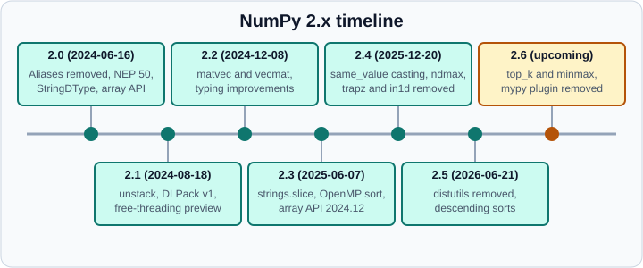

What’s New in NumPy 2.1 to 2.5
|
This content was generated with the assistance of AI and should be verified against the official documentation before being relied on in production. |
This page was written in October 2026. The current release was NumPy 2.5.4 (2026-10-10). Examples target Python 3.13 or 3.14 and were run on Python 3.13, with NumPy 2.5.4. Release dates come from the NumPy files on PyPI, because the release-note pages of the manual do not print dates. Items from the development version are labelled upcoming; they are not in any release and may change before 2.6.0.
NumPy 2.0 (2024-06-16) is covered in Migrating to NumPy 2.x, because its changes are mostly breaking. This page covers what arrived afterwards and what you can use now. NumPy releases a minor version about every six months and a patch release every month or two; the 2.5 line was released on 2026-06-21.

Release summary
| Release | Date | Python | Headline |
|---|---|---|---|
2.1.0 |
2024-08-18 |
3.10 to 3.13 |
|
2.2.0 |
2024-12-08 |
3.10 to 3.13 |
|
2.3.0 |
2025-06-07 |
3.11 to 3.13 |
|
2.4.0 |
2025-12-20 |
3.11 to 3.14 |
|
2.5.0 |
2026-06-21 |
3.12 to 3.14 |
|
2.5.4 (patch) |
2026-10-10 |
3.12 to 3.15 |
Fixes, |
2.6 (upcoming) |
not released |
not yet stated |
Shape typing, |
The minimum Python version moves with the Scientific Python SPEC 0 policy (SPEC 0 supports a Python version for 36 months and core packages for 24 months), which is why each release drops the oldest supported Python. See The Scientific Python Stack for the policy and Installation and Versions for how to install and pin a version.
NumPy 2.1 (2024-08-18)
Highlights: support for Python 3.13, the array API standard 2023.12, and preliminary support for free-threaded Python.
New and changed:
-
numpy.unstack(array, axis=0)splits an array into a tuple of arrays along an axis, the inverse ofnumpy.stack. -
reshapeacceptsshapeandcopykeyword arguments;asanyarrayacceptscopyanddevice;numpy.astypeacceptsdevice. -
numpy.cumulative_sumandnumpy.cumulative_prodare array-API-compatible versions ofcumsumandcumprodthat can include a starting value. -
numpy.clipacceptsminandmaxkeywords in place ofa_minanda_max. -
DLPack v1 is supported.
-
override_reproption fornumpy.printoptions; the print options now live in aContextVar, so they are thread- andasyncio-safe. -
f2py --freethreading-compatibleproduces extension modules that keep the GIL disabled on free-threaded CPython. -
numpy.saveuses pickle protocol 4 for object arrays;ma.covandma.corrcoefare much faster.
import numpy as np
print(np.unstack(np.arange(6).reshape(2, 3)))
print(np.cumulative_sum([1, 2, 3], include_initial=True))Output:
(array([0, 1, 2]), array([3, 4, 5]))
[0 1 3 6]Compatibility notes worth reading: copyto and full now treat Python int and float scalars as safe casts under NEP 50, so np.copyto(int8_arr, 1000) always raises; floor, ceil and trunc no longer turn integer inputs into floats; the C-API symbols are hidden by default; and histogram auto-binning returns bin sizes of at least 1 for integer data. Deprecated: the fix_imports argument of numpy.save (removed in 2.4) and non-integer input to bincount (an error in 2.5).
Source: NumPy 2.1.0 release notes
NumPy 2.2 (2024-12-08)
Highlights: the new matvec and vecmat functions, many typing improvements, better StringDType support, better free-threading support and F2PY fixes.
-
numpy.matvec(A, v)multiplies a stack of matrices by a stack of column vectors;numpy.vecmat(v, A)multiplies a stack of vectors by a stack of matrices. Likevecdot,vecmattakes the complex conjugate of complex vectors on the left-hand side.matmulnever conjugates. -
Ufuncs got a
__dict__and a writable__doc__. -
bool(np.array([]))and the truth value of any empty array now raises. Usearr.size > 0. -
numpy.covwith a single-row 2-D input androwvar=Falsereturns an array instead of a scalar. -
_add_newdoc_ufuncwas deprecated.
print(np.matvec(np.eye(2), np.array([1.0, 2.0])), np.vecdot([1, 2, 3], [4, 5, 6]))Output:
[1. 2.] 32Source: NumPy 2.2.0 release notes
NumPy 2.3 (2025-06-07)
Highlights: interactive examples in the documentation (experimental, run in the browser through Pyodide), an OpenMP build option, preliminary Windows on ARM support, better free-threading support and better annotations. The array API version reported by NumPy moved from 2023.12 to 2024.12.
-
numpy.strings.sliceslices every element of a string array natively, with full slice semantics. -
np.uniqueuses a hash table for some dtypes and has a newsortedparameter, so the result may be unsorted unless you ask forsorted=True. -
out=...(anEllipsis) in a ufunc guarantees an array result instead of a scalar. -
OpenMP:
-Denable_openmp=true(off by default) letsnp.sortandnp.argsortrun in parallel, up to 3.5 times faster on x86 with AVX2 or AVX-512. -
np.matmuluses BLAS for non-contiguous operands by copying when needed;np.dotreports floating-point exceptions;np.isclosewarns whenatolorrtolis NaN or infinite. -
Typing:
numpy.typing.mypy_pluginandnumpy.typing.NBitBaseare deprecated. Thedtype,ndarrayandflatitertype parameters got defaults. -
Removals (expired deprecations):
np.tostring, thenp.compatpackage,fromstringin binary mode,bincount(minlength=None), deprecated C macros such asNPY_OWNDATA, and several others. -
Platform: Linux wheels use
manylinux_2_28, dropping CentOS 7, Debian 9 and Ubuntu 18.04. Python 3.10 support was dropped.
print(np.strings.slice(np.array(["hello", "world"]), 1, 4))
print(np.unique(np.array([3, 1, 3, 2]), sorted=True))Output:
['ell' 'orl']
[1 2 3]Behaviour changes to check in your own results: count_nonzero(axis=None) returns a NumPy scalar, take_along_axis defaults to axis=-1, float16 and float32 switch to scientific notation based on precision (use np.printoptions(legacy="2.2") for the old output), and automatic histogram binning changed to avoid out-of-memory errors on low-variance data.
Source: NumPy 2.3.0 release notes
NumPy 2.4 (2025-12-20)
Highlights: better annotations, casting="same_value", a new C function for registering sort loops (PyUFunc_AddLoopsFromSpecs) and the __numpy_dtype__ protocol for dtype-like objects. Python 3.14 is supported.
-
casting="same_value"(currently inndarray.astypeonly) raisesValueErrorif any value would change in the cast. -
ndmaxinnumpy.arraylimits how many dimensions are created from nested sequences. -
np.sizeaccepts several axes;np.padaccepts a dict forpad_width;StringDTypefill values work in masked arrays. -
__numpy_dtype__is checked innp.dtype(obj)anddtype=arguments, before.dtype. -
Warnings: a ufunc with
where=and noout=warns, since the unselected positions are uninitialised. -
Deprecations: setting
ndarray.strides, positionaloutinnp.maximumandnp.minimum, non-booleanalign=innp.dtype,np.testing.assert_warnsandsuppress_warnings; pending:np.fixand in-placeshapeassignment. -
Removals:
np.trapz,np.in1d,interpolation=in the percentile and quantile family,newshape=inreshape,fix_importsinnp.save,numpy.linalg.linalg,numpy.fft.helper, and conversion of an array withndim > 0to a scalar (aTypeError).np.sum(generator)now raises. -
Compatibility:
np.roundalways returns a copy;kind="heapsort"maps toquicksort; the x86 baseline is x86-64-v2;numpy.typing.DTypeLikeno longer acceptsNone; deletingnumpyfromsys.modulesand importing it again raisesImportError.
try:
np.array([1.5, 2.0]).astype(np.int64, casting="same_value")
except ValueError as e:
print("ValueError:", e)
print(np.array([1.0, 2.0]).astype(np.int64, casting="same_value"))
print(np.array([[1, 2], [3, 4]], dtype=object, ndmax=1))Output:
ValueError: could not cast 'same_value' double to long
[1 2]
[list([1, 2]) list([3, 4])]Source: NumPy 2.4.0 release notes
NumPy 2.5 (2026-06-21)
NumPy 2.5.0 is described in the release notes as a transitional release. It supports Python 3.12 to 3.14 and dropped Python 3.11. Highlights: removal of numpy.distutils, many expired and many new deprecations, many typing improvements, better free-threading support, and descending sorts.
-
Descending sorts:
numpy.sortandnumpy.argsortacceptdescending=True; NaNs sort to the end in both directions. It works for all built-in dtypes exceptvoid,objectandgeneric, and the SIMD fast paths do not apply to descending order, so it can be slower. -
numpy.dtypes.register_dlpack_dtyperegisters user dtypes for DLPack. -
Pattern matching:
ndarrayis a sequence type formatchandcase(PEP 634). -
N-dimensional polynomial evaluation:
polyvalnd,chebvalnd,legvalnd,hermvalnd,hermevalndandlagvalnd. -
F2PY: allocatable module variables show in
dir();intent(inplace)keeps a separate copy. -
Removals:
numpy.distutils,np.row_stack,recfromtxtandrecfromcsv, the'a'dtype alias,np.crosswith 2-D vectors,np.finfo(None). -
Deprecations:
numpy.char.chararrayandnumpy.char.array, settingarr.dtypeorarr.shapeand resizing in place, the generictimedelta64unit (includingarr + 1),np.fix,np.ma.round_,np.typename, and non-integer inputs totriu_indicesand relatives. -
Compatibility:
linalg.eigandeigvalsalways return complex arrays;Generator.binomialandmultinomialproduce different values for the same seed (two corrections to the BTPE sampler);datetime64arithmetic raisesOverflowErroron int64 overflow;meshgridreturns a tuple;from_dlpackraisesBufferError; NumPy’s Cython headers need Cython 3.0 or later; the MSVC minimum is 19.35.
print(np.sort(np.array([3, 1, 2]), descending=True))
match np.arange(3):
case [0, *rest]:
print("match", rest)
w = np.linalg.eigvals(np.array([[2.0, 0], [0, 3.0]]))
print(w.dtype)Output:
[3 2 1]
match [np.int64(1), np.int64(2)]
complex128Source: NumPy 2.5.0 release notes
Patch releases 2.5.1 to 2.5.4
The patch releases fix bugs and are safe to take. The manual’s stable pages are built from the 2.5.0 tag, so the notes for 2.5.1 to 2.5.4 are published on the development documentation site, not under the stable URLs.
| Release | Date | Notable content |
|---|---|---|
2.5.1 |
2026-07-04 |
Datetime Cython API compatible with older NumPy; fixes for memory leaks in |
2.5.2 |
2026-08-09 |
Bug fixes. |
2.5.3 |
2026-09-06 |
Bug fixes. |
2.5.4 |
2026-10-10 |
Python 3.12 to 3.15; |
NumPy 2.6 (upcoming)
The development version was 2.6.dev0 and the 2.6.0 notes were marked "Unreleased". Everything in this section is subject to change and cannot be used from a released package.
-
Shape typing for almost all of the NumPy API.
-
New functions:
numpy.top_k(largest or smallest k values along an axis),numpy.minmax(minimum and maximum in one pass),numpy.ma.assert_array_equal, and abstract dtype classes innumpy.dtypessuch asNumberAbstractDType, usable withnumpy.isdtype. None of them exist in 2.5.4, ashasattr(np, "top_k")confirms. -
Removed:
numpy.typing.mypy_plugin, deprecated since 2.3; the'full','f','economic'and'e'modes ofnumpy.linalg.qr. -
Deprecated: importing
numpy.linalg.lapack_lite;np.dotwitha.ndim >= 2andb.ndim > 2(usematmulortensordot). -
Future change:
numpy.appendscalar promotion will follownumpy.concatenate; affected calls emit aFutureWarning. -
Behaviour:
ndarray.resizeraises on read-only arrays; inequality comparisons ofStringDTypeNaN-like values returnTrue; Python scalars inufunc.outerandufunc.atbecome weak. -
Performance: descending sorts and partitions get SIMD paths on x86; faster ufunc calls through inner-loop caching.
-
The minimum GCC to build is 10.3.0.
Official pages that are out of date
The manual is generally accurate, but a few pages lag behind the release notes. Where they disagree, follow the release notes and test the behaviour.
-
The page on discrete Fourier transforms still says
numpy.fftpromotesfloat32andcomplex64tofloat64andcomplex128. The 2.0 notes say the transforms now compute natively in single and long double precision, and on NumPy 2.5.4np.fft.fftof a float32 array returnedcomplex64. See Discrete Fourier Transforms. -
The array API page says the main namespace is compatible with the 2024.12 standard and refers to "NumPy 2.3.0", although it is built from 2.5. On NumPy 2.5.4,
np.__array_api_version__printed2025.12. Do not rely on one number: treat the standard as a moving target and test the functions you use. See The Array API Standard. -
The "Using Python as glue" chapter is a 2008 text that the manual itself marks as out of date, and some of its code listings contain bugs.
Where older books and tutorials are outdated
A longer, dated table of removed names and changed behaviour, organised by pattern and by book, is in Migrating to NumPy 2.x. The shortlist below shows which release made which common tutorial idiom obsolete.
| Idiom in material written before | Obsolete since | Use today |
|---|---|---|
|
Discouraged since the Generator API (NumPy 1.17, 2019); the legacy stream is frozen |
|
|
2.0 (2024-06-16) |
|
|
2.4 (2025-12-20) |
|
|
2.5 (2026-06-21) |
|
|
2.5 offers |
|
|
2.4 offers |
|
|
2.1 adds |
|
|
2.0 (NEP 51) |
|
Tutorials on the older library lines (NumPy 1.13 to 1.26, roughly 2017 to 2024) are right about array ideas and wrong about names, printed output and promotion of scalars. Treat a code listing as a sketch that needs checking against the release notes.
References
-
NumPy 2.1.0, 2.2.0, 2.3.0, 2.4.0 and 2.5.0 release notes
-
NumPy 2.6.0 release notes (unreleased)